China Employee Termination: Shift-Start Brief for Foreign Employers (Hourly Testing Run)
Key takeaways
- Foreign employers should begin each work cycle with a shift-start control brief for active China termination cases.
- Most preventable failures are visible at shift start: stale route assumptions, unresolved evidence gaps, script uncertainty, and payout mismatch.
- Pulse-style shift-start formatting improves readability and decision speed for non-China leaders.
- Legal route validity and execution readiness are separate gates and both must pass.
- Legal depth should stay in an appendix while practical operations lead.
Pulse lead
This run rotates to a shift-start brief format. The objective is simple: before any action, teams should know what is open, what is blocked, and what can proceed safely.
Plain-language legal/regulatory context first
China’s Labor Contract Law sets route boundaries and severance obligations. State Council implementation regulations and SPC interpretation shape dispute outcomes by testing procedural fairness, documentary reliability, and consistency between rationale and execution records. For foreign operators, this means route logic, evidence logic, communication logic, and settlement logic must remain aligned from first decision to final closure.
Shift-start board (status → implication → first action)
Item 1: Route status
- Status: assumptions confirmed / changed / unknown
- Implication: route validity may be stale if facts changed overnight
- First action: rerun route check before any employee-facing step
Item 2: Evidence status
- Status: chronology clean / partial / contradictory
- Implication: unresolved contradictions raise dispute exposure
- First action: hold progression and assign remediation SLA
Item 3: Communication status
- Status: script locked / pending / variance observed
- Implication: script drift can undermine defensibility
- First action: confirm final script and manager briefing evidence
Item 4: Settlement status
- Status: worksheet aligned / pending / mismatched
- Implication: payout ambiguity increases reopen risk
- First action: legal/payroll co-sign before commitments
Item 5: Tax note status
- Status: unified / inconsistent
- Implication: mixed explanations create trust/compliance friction
- First action: unify and validate local assumptions if needed
Item 6: Authority status
- Status: primary + backup assigned / gap
- Implication: cutover decisions may stall or drift
- First action: confirm decision owners before execution window
Item 7: Closure status
- Status: evidence complete / incomplete
- Implication: signature-only closure creates residual risk
- First action: enforce proof-based closure gate
Practical implications for foreign employers
- HQ: request shift-start board, not route-only summaries.
- Regional HR: unresolved critical items should auto-trigger no-go.
- Payroll/finance: co-own settlement/tax items before commitments.
- Managers: script control remains compliance-critical.
Scenario snapshots
Snapshot A: Shift-start route recheck prevented stale execution
Snapshot B: Shift-start settlement review avoided payout mismatch
Snapshot C: Shift-start closure check blocked false close
Daily SOP (shift-start)
- Publish shift-start board for active cases.
- Assign owner/SLA for each open critical item.
- Run legal/payroll sync before employee-facing actions.
- Hold execution on unresolved critical items.
- Confirm authority coverage each shift.
- Close only when proof-based closure criteria pass.
Required document checklist
- route memo + revalidation triggers
- chronology map + contradiction register
- script lock + briefing evidence
- settlement worksheet + tax note
- authority matrix (primary/backup)
- shift-start log with owner/SLA
- payment proof + reconciliation
- closure audit + archive checklist
Governance cadence
- Daily shift-start review
- Weekly 30-min blocker/SLA review
- Monthly 60-min pattern recalibration
KPI pack
- unresolved critical shift-start items
- item aging over SLA
- script-drift frequency
- settlement relock rate
- closure lag (signature to verified close)
- 30-day reopen rate
FAQ
Is shift-start governance legally required?
No. It is an operational governance model.
Can small teams use this?
Yes. Start with items 1-5.
Why this format for foreign clients?
It converts legal complexity into immediate operating priorities.
Is negotiated termination always safer?
Not automatically; execution coherence remains decisive.
When should external PRC counsel be mandatory?
High-risk unilateral routes, protected-status concerns, restructuring, and multi-city complexity.
Legal depth appendix
Anchors: PRC Labor Contract Law, State Council implementation regulations, and SPC labor-dispute interpretation. Combined implication: legality, fairness, and documentary reliability are jointly assessed.
Disclaimer
Informational only; not legal, tax, or employment advice. Seek qualified PRC advice for case-specific matters.
Sources
- National People’s Congress — Labor Contract Law of the PRC (English), 2007-12-13: http://www.npc.gov.cn/zgrdw/englishnpc/Law/2007-12/13/content_1384064.htm
- State Council — Implementation Regulations of the Labor Contract Law (Decree No. 535), 2008-09-18: https://www.gov.cn/gongbao/content/2008/content_1124615.htm
- Supreme People’s Court — Interpretation on Labor Dispute Application Issues (Fa Shi [2020] No. 26), 2020-12-29: https://www.court.gov.cn/fabu/xiangqing/243981.html
- China Briefing / Dezan Shira — Employee Termination in China, 2025-10-17: https://www.china-briefing.com/news/employee-termination-in-china/
- Littler — Key Recent Developments in China’s Employment Law, 2024-03-20: https://www.littler.com/news-analysis/asap/key-recent-developments-chinas-employment-law-china-us-comparative-perspective
- PwC Worldwide Tax Summaries — PRC Individual Taxes on Personal Income, 2025-01-15: https://taxsummaries.pwc.com/peoples-republic-of-china/individual/taxes-on-personal-income
Escalation ladder (shift-start governance)
- Tier 1: case owner triage and immediate hold/release recommendation
- Tier 2: legal/payroll joint validation for technical blockers
- Tier 3: regional authority final go/no-go decision
- Tier 4: executive escalation for material business impact
No case should proceed to employee-facing action with unresolved Tier 2 blockers.
Handoff packet standard
Every shift-start review should include:
- active blockers and severity
- owner and SLA per blocker
- dependencies not yet cleared
- explicit go/no-go recommendation
- first two actions for the current shift
City-overlay calibration model
Use one country baseline plus city overlays:
- local counsel escalation triggers
- local evidence-sensitivity flags
- local settlement communication cautions
- local dispute timeline expectations
This prevents over-standardization across jurisdictions.
Expanded scenario clinic
Scenario D: Route recheck at shift start prevents stale path
Scenario E: Script lock failure caught before manager contact
Scenario F: Settlement/tax mismatch fixed before commitment
Leadership one-page shift-start output
- route/evidence/communication/settlement status
- active blockers and SLAs
- authority coverage confirmation
- residual risk statement
- next checkpoint time
Weekly execution review checklist
- Review unresolved critical items and aging trend.
- Validate owner accountability and overdue SLA recovery plans.
- Identify recurring blocker combinations by entity.
- Assign one preventive control update per cycle.
- Log lessons learned and update shift-start template language.
Monthly recalibration workshop
Run a 60-minute cross-functional review with HR, legal, payroll, and regional leadership:
- top recurring failure clusters
- root-cause diagnosis per cluster
- one control change per cluster
- owner + deadline assignment
- prior-month effectiveness validation
KPI intervention matrix
- Green: stable/improving KPIs → maintain controls.
- Amber: one-cycle deterioration → increase monitoring and coaching.
- Red: two-cycle deterioration → mandatory corrective plan and leadership sign-off.
Regional control playbook for foreign operators
Standardize these five elements regionally:
- decision rights by escalation tier
- minimum documentation quality threshold
- communication approval flow
- settlement release preconditions
- closure evidence requirements
This helps scale consistency while preserving local overlays.
Quality guardrails before execution
- no unresolved critical shift-start item
- no missing owner or SLA
- no mismatch between settlement worksheet and communication copy
- no closure status before payment proof and archive checks
Common mistakes and prevention
- Mistake: shift-start review treated as status ritual only
Prevention: enforce action-linked blockers with ownership.
- Mistake: payroll involved too late
Prevention: pre-commitment legal/payroll co-sign gate.
- Mistake: authority ambiguity during cutover
Prevention: mandatory primary/backup confirmation each shift.
- Mistake: city differences ignored
Prevention: apply local overlays on central baseline.
What to do this week
- Roll out one-page shift-start template to active cases.
- Define hard-blocker criteria for automatic no-go.
- Require legal/payroll co-sign before employee commitments.
- Confirm authority coverage at each shift open.
- Start weekly KPI review and monthly recalibration.
- Add city-overlay notes with local counsel.
Need local employment support in China?
If you need a compliance-first partner for hiring, payroll, and risk controls in China, China-Payroll.com can help evaluate the right setup.
Image Prompt Pack
Create a 16:9 hero image for article title: 'China Employee Termination: Shift-Start Brief for Foreign Employers (Hourly Testing Run)'. Scene: global operations team evaluating workforce model options for China market entry. Include motifs: decision matrix, or…